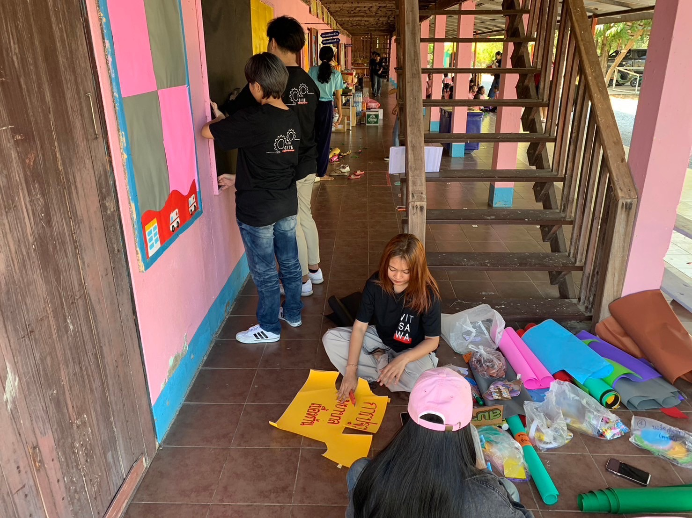

ผลงานของฉัน
[รายละเอียดผลงานที่ผ่านมาของคุณ]
ค่ายcite อาสาปันน้ำใจเพื่อน้อง ในวันที่25-26 พฤศจิกายน พ.ศ.2566 ที่จังหวัดสุพรรณบุรี มีการไปเล่นเกมทาสีเลี้ยงข้าวให้น้องๆ[รายละเอียดผลงานที่ผ่านมาของคุณ]
ค่ายcite อาสาปันน้ำใจเพื่อน้อง ในวันที่25-26 พฤศจิกายน พ.ศ.2566 ที่จังหวัดสุพรรณบุรี มีการไปเล่นเกมทาสีเลี้ยงข้าวให้น้องๆ